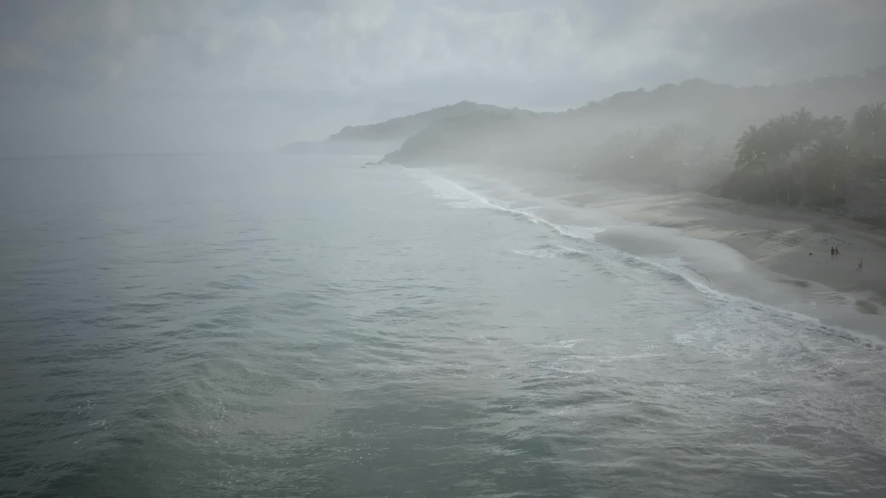
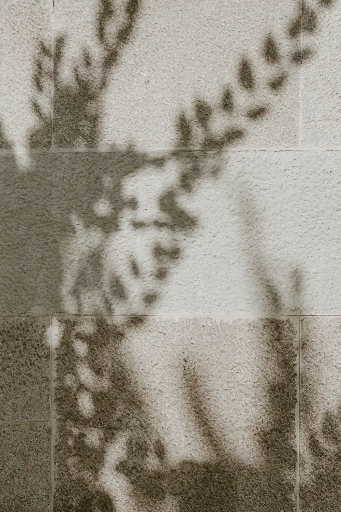
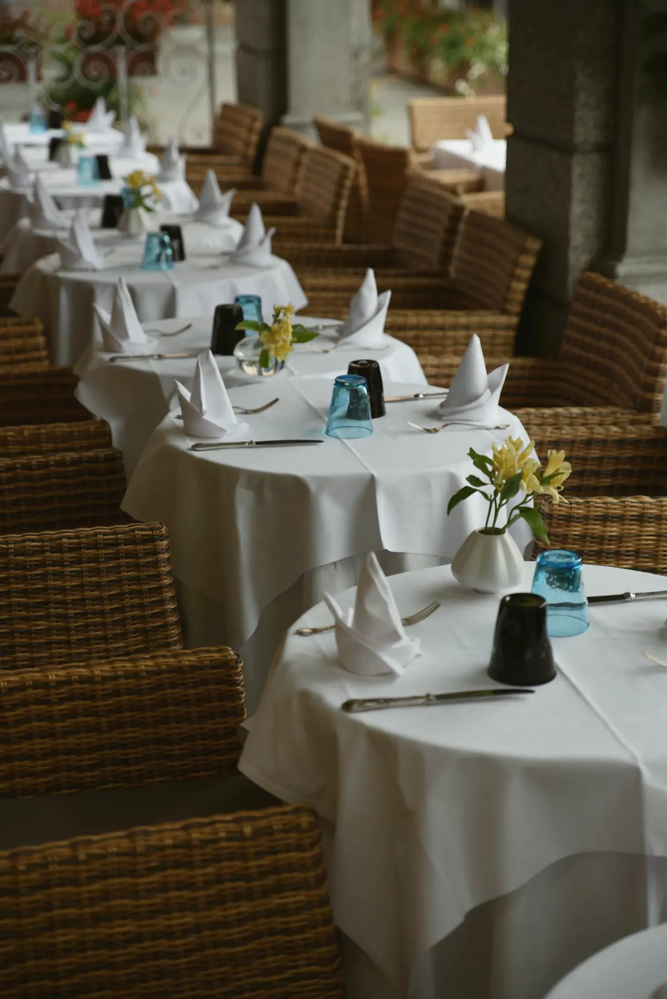
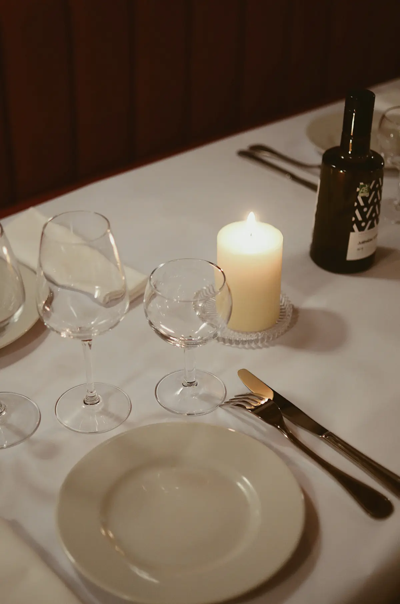
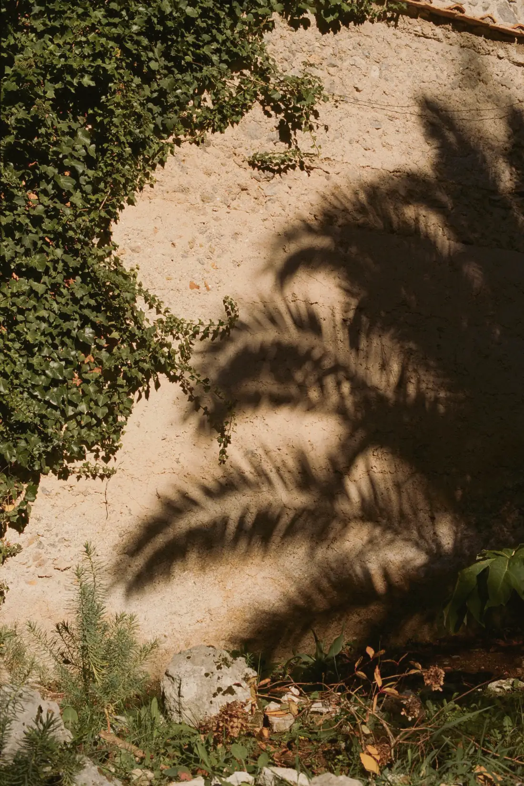
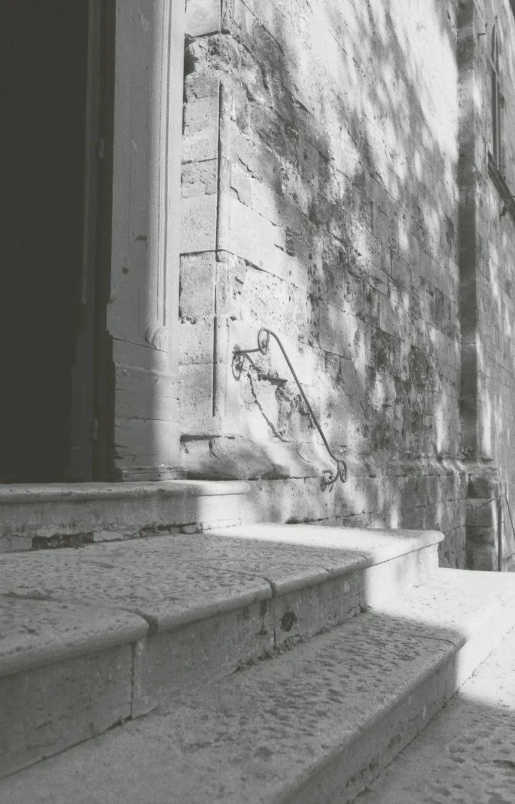
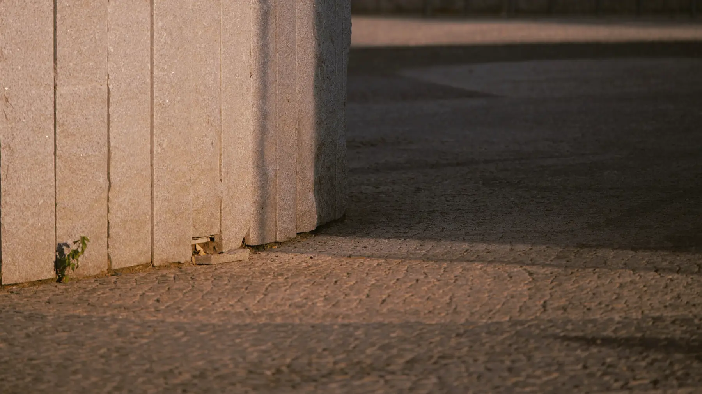
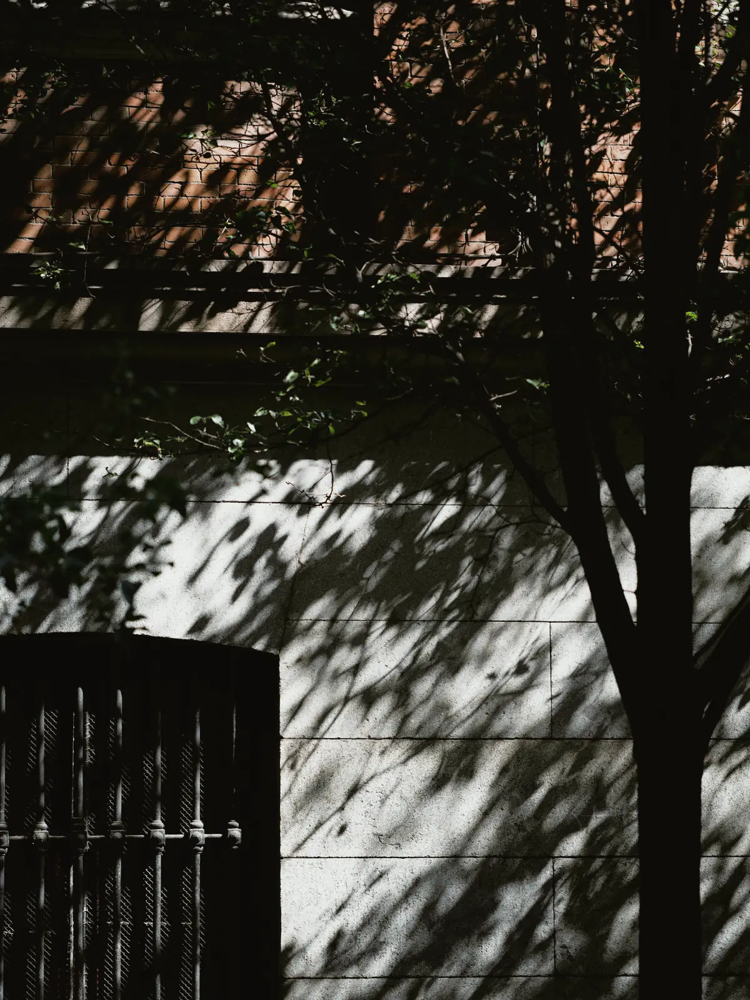
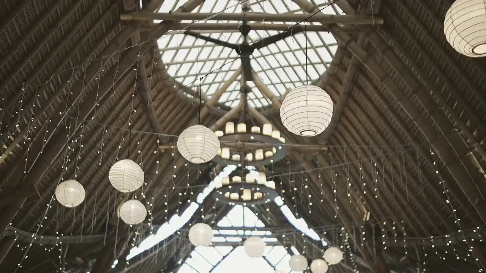

DORR — Hospitality Group

01 Introduction
The shell protects.
The pearl shines.
As the Group expands its portfolio of hospitality concepts, DORR brings every brand into one clear organizational structure and an integrated operating model, sharing expertise while preserving the individuality and entrepreneurial spirit of each.
As the Group continues to expand its portfolio of hospitality concepts, the need for a clear organizational structure and an integrated operating model has become increasingly important. The Group currently manages multiple businesses with distinct identities and operational requirements, while sharing a common vision for growth, excellence, and long-term sustainability.
Through the creation of a dedicated Services Company operating under the guidance of the Holding Company, the Group is able to leverage shared expertise while preserving the individuality and entrepreneurial spirit of each brand. The structure is designed to centralize specialized services, improve operational efficiency, enhance collaboration between entities, and establish a scalable foundation for future expansion.

One Holding. One Services Company. Five brands, each with its own character.
-
I
Holding Company
Sets the strategic direction and governance of the Group.
-
II
Services Company
Eight disciplines, shared by every brand under the guidance of the Holding Company.
-
III
Five brands
DADA RestaurantSAYAH BeachclubDÉJÀ VUM04RANDEZVOU
Stronger governance
Clear oversight across every entity.
Optimized resources
Shared expertise, used where it adds most.
Room to innovate
A structure that supports new ideas.
Agility & consistency
The same standard, everywhere.
Eight disciplines, one thread.
- iCulinary & Beverage
- iiCreative & Experience
- iiiMarketing & CRM
- ivPeople & Culture
- vOperations Excellence
- viProject Development & Opening
- viiProcurement & Supply Chain
- viiiTechnology, Data & Systems

04 The Portfolio
Five brands, one pearl.
-
01 / 05
DADA
RestaurantA distinct dining concept with its own identity, supported by the Group.

-
02 / 05
SAYAH
BeachclubA beach club with its own rhythm, backed by shared Group expertise.

-
03 / 05
DÉJÀ VU
Hospitality conceptA DORR hospitality concept.

-
04 / 05
M04
Hospitality conceptA DORR hospitality concept.

-
05 / 05
RANDEZVOU
Hospitality conceptA DORR hospitality concept.


Shared expertise. The individuality of each.
05 Future Vision
A leading hospitality platform, recognized for innovation, operational excellence and distinctive guest experiences.
The organizational structure has been designed to support both the current portfolio of businesses and future growth opportunities. As the organization expands, new hospitality concepts, restaurant brands, and complementary ventures can be integrated efficiently within a unified governance framework.
Through centralized expertise, disciplined oversight, and shared resources, the Group seeks to build a resilient and scalable organization capable of adapting to evolving market conditions while maintaining consistent standards across its portfolio.
As the platform matures, the Group may evaluate opportunities to extend selected capabilities beyond its internal portfolio, where such initiatives align with its long-term vision and create additional shareholder value.
Ultimately, the vision is a diversified ecosystem of hospitality brands operating under a unified strategic direction, while preserving the distinctive identity and character of each concept.
Write to us.
For partnerships, new concepts and opportunities across the DORR Group.